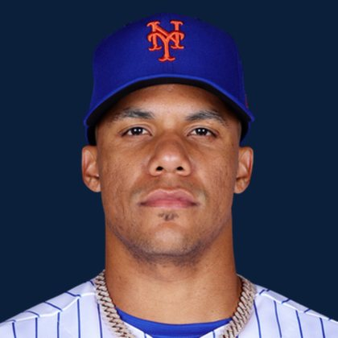
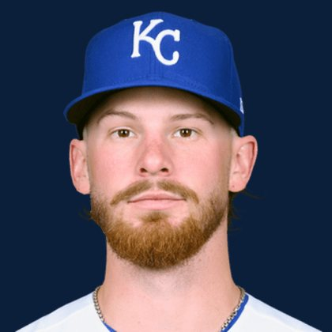
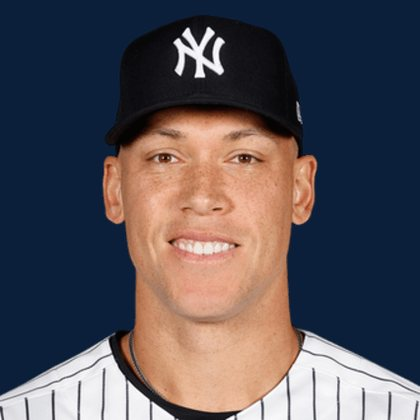

The Keep
Overall dynasty
Top 10 · 3 boards · November 22, 2026
Full board- 1
 12,000
12,000 - 2
 10,873
10,873 - 3

10,228 - 4

9,769 - 59,409
- 6
 9,111
9,111 - 7
 8,855
8,855 - 88,629
- 9

8,426 - 10
 8,241
8,241
BASE KEEP
The Keep · The Diamond · The Farm
Dynasty baseball
Updated November 22, 2026
The Keep
Top 10 · 3 boards · November 22, 2026
Full board
10,228
9,769
8,426The Diamond
Top 10 · this year only
Full boardFull tape · majors and farm
The long dynasty board. Majors plus prospects, mashed from the three deep lists.
2136 players
130 AB and 50 IP or fewer
Prospects who have not crossed 130 career MLB at-bats or 50 innings. Pipeline team top 30s plus the public farm lists.
925 players
More than 130 AB or 50 IP
Dynasty names who have crossed the farm cutoff, plus other active MLB players filled by the BK model.
1211 players
2027 projected nines
All 30 clubs, alphabetical. FanGraphs Roster Resource 2027 batting order with Depth Charts projections.
270 players
News
HOUSTON, TX - The Houston Astros have tendered contracts to six of their arbitration-eligible players. Those players are RHP Ronel Blanco, R
Hot Stove Rumors: Webb, Peralta, Mets, Yankees, Cubs, White Sox MLB.com
MLB Insider: CJ Abrams should be the Yankees' prime trade deadline target Yahoo Sports
Dodgers Notes: LA Makes Major Trade, Tarik Skubal Receives Contract Offer, Surprise Alex Call Decision Sports Illustrated
Troy Melton, who went 8-5 with a 2.76 ERA in 20 starts this season, has agreed to a six-year, $46.5M contract extension with the Tigers, sou
Rincon could be in play for the big club in ’27.
Andy Pages, Edwin Díaz Nearing Return From Injured List MLB Trade Rumors
Royals Exploring CJ Abrams, MacKenzie Gore, Jarren Duran In Trade Talks MLB Trade Rumors
Atlanta Braves news and notes from Friday.
Yankees willing to trade Jones, Domínguez, McMahon; Roh Si-hwan emerges as third base target; Bednar extension floated